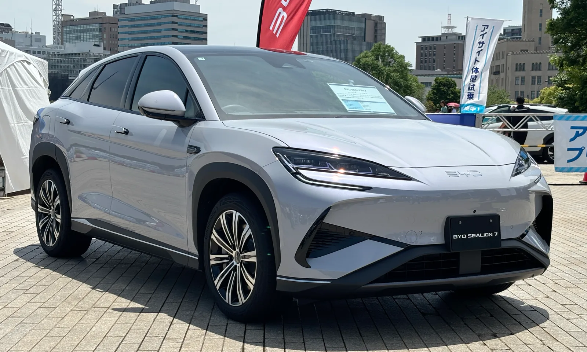

▲ BYD코리아가 수리비 논란에 대해 공임 단가와 서비스 인프라 수치를 공개했다 ⓒ Wikimedia Commons
1. 논란은 금액에서 시작됐다
최근 온라인에서 BYD 차량의 수리 견적이 화제가 됐습니다. 사고 수리 견적이 예상보다 크게 나왔다는 사례들이 공유되면서, 국내에 갓 자리 잡은 브랜드의 수리비 구조를 두고 의문이 붙었습니다.
BYD코리아는 이에 대해 공식 입장을 냈습니다. 반박의 핵심은 "비싸지 않다"가 아니라 "이런 기준으로 계산된다"였습니다. 금액을 부인하는 대신 산정 구조를 공개하는 방식입니다.
이 차이가 중요합니다. 수리비는 부품값과 공임의 합입니다. 어느 쪽이 커서 견적이 커졌는지에 따라 소비자가 대응할 수 있는 여지가 완전히 달라집니다.
2. 시간당 11만 5천 원이라는 단가
BYD코리아가 밝힌 일반 수리 공임은 시간당 평균 약 11만 5,000원입니다. 다만 각 서비스센터의 운영 기준에 따라 차이가 날 수 있다고 덧붙였습니다.

▲ BYD 씨라이언 7. 국내 판매가 늘면서 사후 서비스 체계가 시험대에 올랐다 ⓒ Wikimedia Commons
공임은 '시간당 단가 × 표준 작업 시간'으로 계산됩니다. 그래서 단가만으로는 최종 금액을 알 수 없습니다. 같은 단가라도 작업 시간이 길게 잡히면 청구액은 커집니다. 전기차는 배터리 팩 탈거처럼 표준 시간이 길게 설정된 작업이 있어, 내연기관차와 단순 비교가 어렵습니다.
단가를 공개한 것 자체는 의미가 있습니다. 국내에서 시간당 공임을 명시적으로 밝히는 수입 브랜드는 많지 않습니다. 소비자 입장에서는 견적서에 적힌 공임 항목이 이 단가와 맞는지 검증할 기준선이 생긴 셈입니다.
3. 사고 수리 견적은 아우다텍스가 만든다
BYD코리아는 사고 수리 견적에 글로벌 견적 시스템 '아우다텍스(Audatex)'를 쓴다고 밝혔습니다. 아우다텍스는 차종·부위별 표준 작업 시간과 부품 정보를 담은 견적 산출 시스템으로, 국내외 보험·정비 업계에서 널리 쓰입니다.
이 대목이 논란의 성격을 바꿉니다. 견적이 담당자의 재량이 아니라 표준 시스템에서 나온다면, "왜 이렇게 비싼가"라는 질문은 "이 시스템이 이 차의 작업 시간을 어떻게 잡고 있는가"라는 질문으로 옮겨 갑니다.
단, BYD는 견적이 바뀔 수 있다는 조건을 함께 달았습니다. 정밀 점검 과정에서 추가 손상이 발견되면 견적이 변경될 수 있다는 설명입니다. 최초 견적과 최종 청구액이 다를 수 있다는 뜻이므로, 소비자는 이 지점을 미리 확인해 두는 편이 좋습니다.

▲ 대형 디스플레이와 전자식 부품 비중이 큰 실내 구성은 사고 시 교체 단가에 그대로 반영된다 ⓒ Wikimedia Commons
4. 센터 20곳, 워크베이 92개, 하루 600대
BYD코리아가 공개한 인프라 수치는 다음과 같습니다.
| 항목 | 현재 | 계획 |
|---|---|---|
| 서비스센터 | 20곳 | 연말까지 26곳 |
| 워크베이 | 92개 | - |
| 일일 처리 능력 | 최대 600대 | |
워크베이는 실제로 차를 올려놓고 작업하는 자리입니다. 센터 수보다 이 숫자가 대기 시간을 더 직접적으로 결정합니다. 92개를 20곳으로 나누면 센터당 평균 4.6개입니다.
하루 600대는 정비 전체 기준입니다. 소모품 교환처럼 짧게 끝나는 작업과 판금·도장이 필요한 사고 수리는 점유 시간이 다릅니다. 사고 수리 대기가 길어지는 것은 워크베이 수가 아니라 이 점유 시간 때문인 경우가 많습니다.
5. 부품은 어디서 오나
BYD코리아는 주요 정비·사고 수리 부품을 사전에 국내에 확보해 둔다고 밝혔습니다. 긴급 배송 체계도 함께 운영합니다.

▲ 국내 라인업이 늘어날수록 사전 확보해야 할 부품 품목도 함께 늘어난다 ⓒ Wikimedia Commons
국내 재고가 없는 부품은 항공으로 들여옵니다. 항공 운송은 대기 기간을 줄이는 대신 물류비가 붙습니다. 이 비용이 부품값에 어떻게 반영되는지는 공개되지 않았습니다. 수입 브랜드의 수리비가 국산차보다 높게 나오는 이유 가운데 하나가 여기에 있습니다.
BYD는 안전성도 함께 언급했습니다. 유로앤캡에서 5스타 등급을 받았다는 설명입니다. 다만 충돌 안전 등급과 수리비는 별개의 문제입니다. 오히려 충돌 에너지를 구조물이 흡수하도록 설계될수록 사고 후 교체 범위가 넓어지는 경우도 있습니다.
6. 소비자가 실제로 확인할 것
첫째, 견적서에서 공임과 부품비를 분리해 보십시오. 공임이 크면 작업 시간 산정을, 부품비가 크면 해당 부품의 국내 재고 여부를 물어야 합니다. 대응 방법이 다릅니다.
둘째, 최초 견적이 확정 견적인지 확인하십시오. BYD는 정밀 점검 후 견적 변경 가능성을 명시했습니다. 수리 착수 전에 "추가 발생 시 재동의 절차"를 서면으로 남겨 두는 편이 안전합니다.
셋째, 자차보험 갱신 시 수리비 기준을 확인하십시오. 브랜드별 평균 수리비는 보험료 산정에 반영됩니다. 국내 진출 초기 브랜드는 데이터가 쌓이는 중이라 조건이 바뀔 여지가 있습니다.
넷째, 가까운 센터의 워크베이 수를 확인하십시오. 센터가 집 근처에 있어도 작업 자리가 적으면 대기가 길어집니다. 연말까지 26곳으로 늘어나는 만큼, 신설 예정지도 함께 물어볼 만합니다.
정리하면 이렇습니다. BYD가 내놓은 답은 "싸다"가 아니라 "이렇게 계산된다"였습니다. 소비자에게 필요한 것도 결국 같습니다. 금액의 크기보다 그 금액이 어떤 항목으로 구성됐는지를 볼 수 있는가가 판단의 기준이 됩니다.